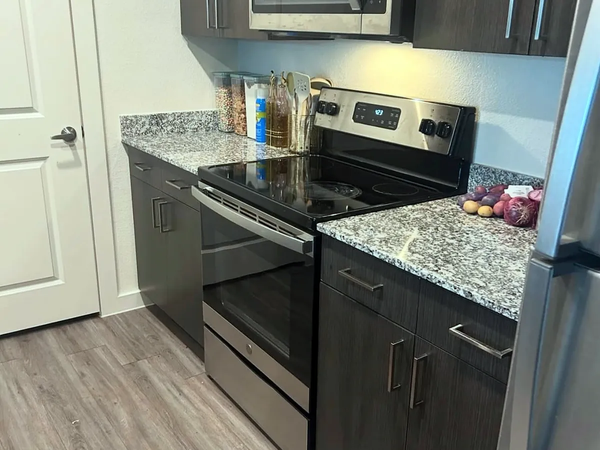

Recurring House Cleaning in Andover
Busy Andover and North Andover families choose biweekly visits from a local owner-led team instead of a rotating crew.
Starting at $150 per visitBiweekly visits
recurring house cleaning in AndoverAndover is a town of busy families: school runs, sports practice, long commutes and full calendars. With larger colonial homes and little free time, a reliable cleaning routine is not a luxury here. It is how the week stays under control.

Our biweekly plan is a great fit for towns like Andover. Every visit follows the same checklist and your personal notes, so the house stays clean and you stop spending your evenings and Saturdays catching up.
Four bedroom colonials with finished basements and several bathrooms need the right time and team. We plan every visit around the size of your home, so nothing gets rushed and nothing gets skipped.
Andover sees a lot of families relocating for work and schools. Our move in and move out cleaning gets the house ready for the closing walkthrough or for your first night in the new home.
With a large franchise, the people at your door can change from one visit to the next and the phone is answered far away. Owl is a small company from the North Shore: you talk to the owner, your notes stay with the people who clean your home and the price is clear before anything is booked.
Our team is based in Peabody and cleans homes across Andover and the surrounding area, including North Andover, Tewksbury and Reading. Tell us your street when you request a quote and we will confirm your spot on the schedule.
Busy Andover and North Andover families choose biweekly visits from a local owner-led team instead of a rotating crew.
Starting at $150 per visitBiweekly visits
recurring house cleaning in AndoverFour-bedroom colonials with several bathrooms get a planned deep clean, with the right time and team for the size.
Starting at $340
deep cleaning in AndoverRelocating for work or schools? We clean the house for the closing walkthrough or for your first night in town.
Starting at $300
move-in / move-out cleaning in AndoverBefore a graduation party or a holiday weekend, a one-time clean covers every room your guests will see.
Starting at $170One-time visit
standard cleaning in AndoverTell us about your home and the service you need. We reply with a clear price and the next available date in Andover.
Tell us about your home. We reply with a clear price, no obligation.
Our focus is Andover, and we can often fit nearby North Andover homes into the schedule. Ask in your quote request and we will confirm.
Yes. Tell us the number of bedrooms, bathrooms and the basement in your quote request and we plan the right time and team for your home.
Often, yes. Send us your closing or moving date as early as possible and we reserve the time for a move in or move out clean.
Fill out the form on this page or call (978) 239-2635. Tell us the size of your home and the service you want, and we reply with a clear price.
Yes. Owl Cleaning Co. is a local, owner-led maid service with recurring, deep and move in/out cleaning for homes in Andover, MA.
Request your quote in minutes. Just tell us about your home.